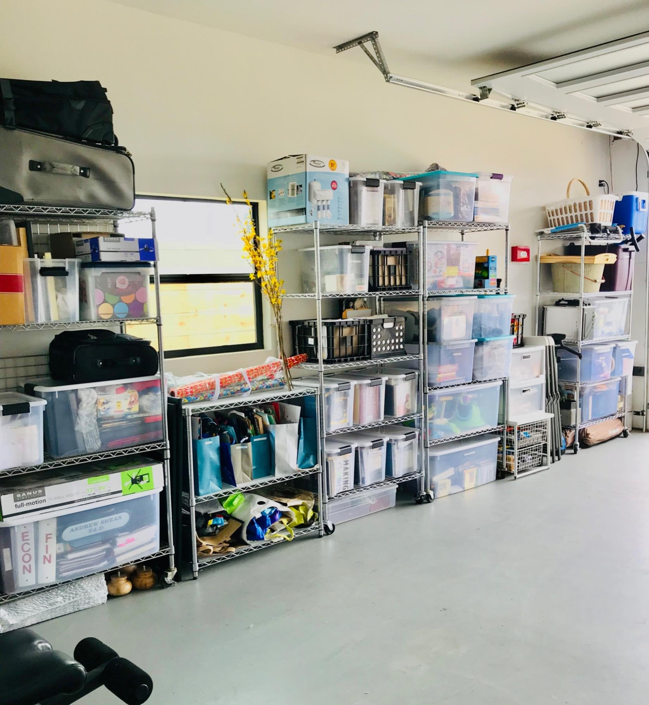

Purging Year Round
What are the benefits of purging overtime?
Some may ask what purging is. To begin, purging is the act of getting rid of things that are not used, unwanted, broken or trash. The next thing someone might comment, why purge? Why now? Let's start with the first set of questions. Think back to a time when you got rid of stuff. Do you remember every item that you gave away? By giving those items away, does it negatively affect your life now? Typically, the answer is no, not everything. We form attachments to things for pleasure, a feeling of security and worth. The quantity of things that we have does not define who we are. And when we get rid of things, 90% of the time we forget about the things we have purged. The reason we get rid (purge) is to have less stress. Less stuff = less stress.

Check out more of our photos HERE
How many times have you said that you were going to get organized, but continually put it off? When your mess becomes too big, oftentimes it’s too late. Again more mess = more stress. Studies show that clutter is associated with procrastination. Invision a garage of a family of five. There’s sporting gear, bikes, workout equipment, tools, backstock house products, decorations, holiday decor and so much more. Then come all of the schedules and late nights just trying to keep up with it all. Backpacks and shoes are tossed at the door. The party decorations are thrown on top of the exercise equipment, to be put away at a later time. The empty Costco boxes are stacked and about to fall over like a game of Tetris. Oh no, Christmas is here. Decorations are pulled out and never to be put back in the correct box. Leaving pieces to this and that on the shelves of the garage. And so on. As we all know life is crazy (with or without kids) and it’s hard to keep up. When we start a habit of putting things down and not where they go, clutter adds up. And when the pile gets too high it becomes very overwhelming. Thus, never to be started.
Therefore, it is extremely important to purge and organize through the seasons. If you constantly open your dresser drawer and that hideous purple shirt taunts you, donate it! It no longer serves you a purpose and is just making you mad at this point. Purging overtime makes the overall mess more manageable and therefore you are less stressed. That is the main point that we want to make, purging = less stress. It doesn't have to feel like you’re pulling out teeth and you don’t have to get rid of anything you are not comfortable with. Be honest with yourself of what serves a purpose and what does not. Be honest if you like something still or holding onto it because of the money you spent. As Marie Kondo says, “Does it bring you joy?”. When you put on that yellow top, do you like the way you feel and look in it? If not, donate it. (If you don’t know Marie Kondo; check out her her books here. She’s a beautiful inspiration in the home organization industry. Again when we purge overtime, the clutter will begin to fade overtime. The task is done quicker and you aren’t stressing about it for as long.
Remember there are professionals like us to help you throughout the purging process. We are a team of professional and unbiased people who can assist you in every step of the organization process. Here is more on Our Process and How We Help Our Clients . Please use us as your organizing resource, we are here to help you create a more balanced life through organized living.